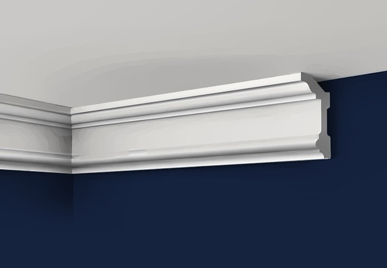

Потолочный плинтус под покраску из дюрополимера
Потолочные плинтусы (карнизы) из полистирола высокой плотности — дюрополимера, под покраску: от компактного A38 20×20 мм до широкого A504, длина 2 м. Плотный материал даёт чёткие углы и ровный стык, не крошится при запиле. Для скрытой LED-подсветки и «парящего» потолка — потолочный плинтус с подсветкой A503 с нишей под ленту. Углы запиливаются под 45°, стык шпаклюется, красится в цвет потолка или стен.




Цены предварительные, за штуку, без НДС. Нажмите на товар — там фото, 3D, профиль, размеры, цена и заявка.
Вопросы и ответы
Как отрезать угол потолочного плинтуса?
В стусле под 45°: для внутреннего угла — левая часть под 45° вправо, правая — влево; для внешнего наоборот. Без стусла — разметить по потолку и стене и отрезать по линиям. Стык шпаклюется.
Чем клеить потолочный плинтус?
Жидкими гвоздями на водной основе или акриловым монтажным клеем — к стене и потолку; щели заполняются акриловым герметиком и красятся.
Какой карниз под LED-подсветку?
A503 — потолочный плинтус под подсветку с нишей под ленту: крепится к стене с отступом от потолка, лента светит вверх — эффект парящего потолка.
Подходит ли для натяжного потолка?
Да: карниз клеится только к стене, с зазором до натяжного полотна; под подсветку — A503.
Сколько нужно?
Периметр потолка ÷ 2 м, плюс 10 % на подрезку углов.
Заявка
Ответим с ценой, наличием и сроком в рабочее время. Быстрее всего — написать в чат (кнопка «Чат» внизу справа) или заказать обратный звонок — перезвоним сами.
Оставьте номер — перезвоним в рабочее время, расскажем про наличие, цену и доставку. Укажите в комментарии, когда удобно принять звонок.
Менеджер подтвердит наличие и стоимость доставки и пришлёт ссылку на оплату картой или через СБП — оплата до отгрузки, электронный чек придёт на e-mail. Компаниям и ИП — счёт. Самовывоз со склада в СПб — бесплатно. Об оплате и возврате